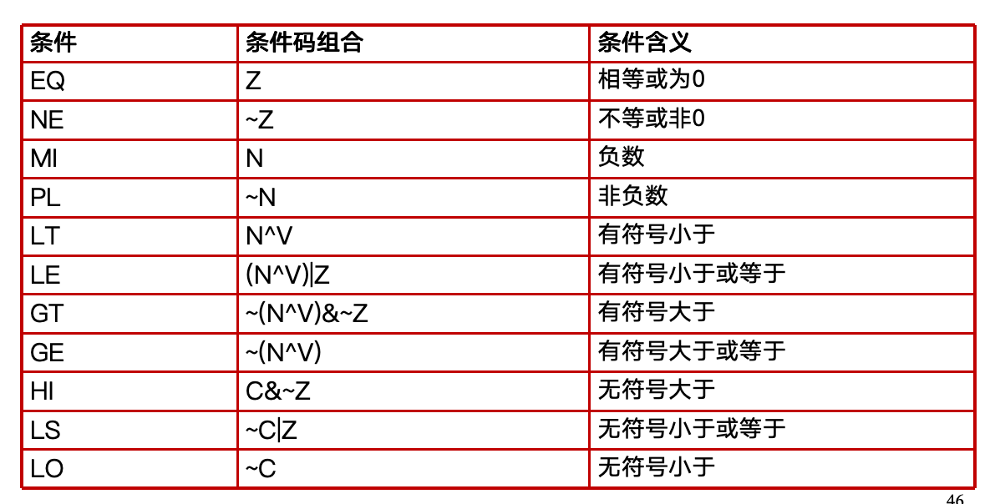
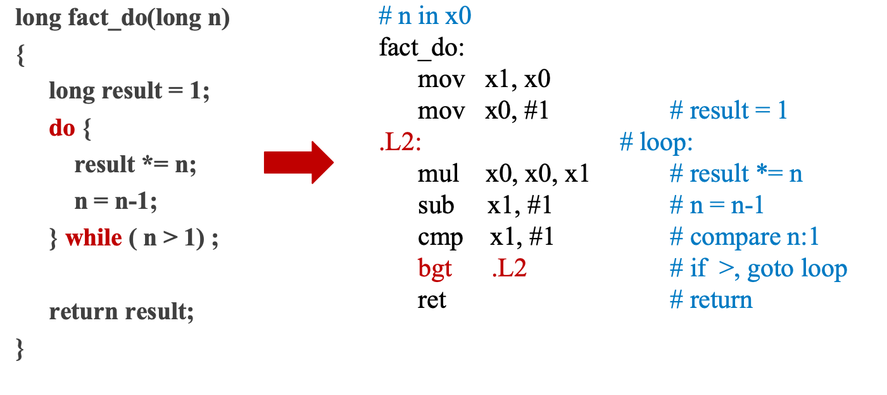
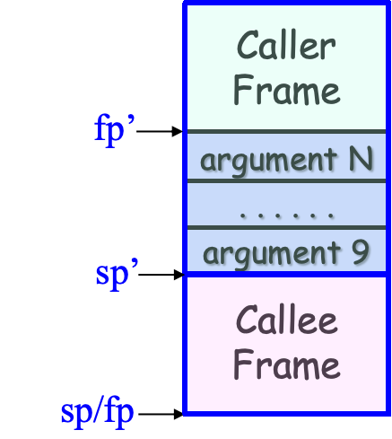
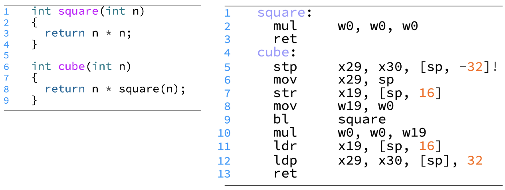
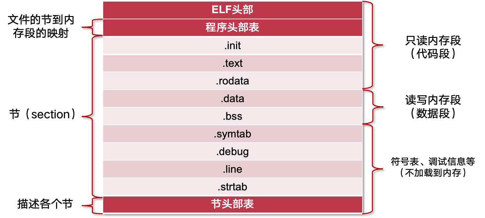

操作系统：期中复习
Last updated on December 11, 2025 pm
本文为 SJTU-CS3601 操作系统课程的期中复习，主要复习内容为操作系统概述、内存管理。
操作系统概述及结构
- 操作系统的功能：
- 从硬件角度：管理硬件、对硬件进行抽象
- 从应用角度：服务应用、管理应用
操作系统内核架构
-
宏内核：内核所有模块运行在内核态，具备直接操作硬件的能力
- 优点：拥有丰富的沉淀和积累
- 缺点：
- 安全性与可靠性问题：模块之间没有很强的隔离机制
- 实时性支持：系统太复杂导致无法做最坏情况时延分析
- 系统过于庞大而阻碍创新
- 向上向下的扩展：很难去剪裁/扩展一个宏内核系统支持从 KB 级别到 TB 级别的场景
- 硬件异构性：很难长期支持一些定制化的方式去解决一些特定问题
- 功能安全：无法通过汽车安全完整性认证
- 信息安全：单点错误会导致整个系统出错
- 确定性时延：目前依然不确定是否能支持确定性时延
-
微内核：
- 设计原则：最小化内核功能
- 将内核功能拆分到用户态，成为独立的“服务”
- 内核仅保留极少功能，为这些服务提供通信
- 优点：
- 易于扩展：直接添加一个用户进程即可为操作系统增加服务
- 易于移植：大部分模块与底层硬件无关
- 更加可靠：在内核模式运行的代码量大大减少
- 更加安全：即使存在漏洞，服务与服务之间存在进程粒度隔离
- 更加健壮：单个模块出现问题不会影响到系统整体
- 缺点：
- 性能较差：内核中的模块交互由函数调用变成了进程间通信
- 生态欠缺：尚未形成像 Linux 一样具有广泛开发者的社区
- 重用问题：重用宏内核操作系统提供兼容性，带来新问题
- 设计原则：最小化内核功能
-
外核：不提供硬件抽象；不管理资源，只管理应用
- 应当由应用来尽可能地控制对硬件资源的抽象
- 将对硬件的抽象以库（LibOS）的形式提供，不同应用可使用不同的 LibOS
- 优点：
- OS 无抽象，能在理论上提供最优性能
- 应用对计算有更精确的实时等控制
- LibOS 在用户态更易调试，调试周期更短
- 缺点：
- 对计算资源的利用效率主要由应用决定
- 定制化过多，导致维护难度增加
-
多内核：通过多内核来管理异构多核设备
- 思路：
- 默认的状态是划分而不是共享
- 维持多份状态的 copy 而不是共享一份状态
- 显式的核间通信机制
- 设计：
- 在每个 core 上运行一个小内核
- OS 整体是一个分布式系统
- 应用程序依然运行在 OS 之上
- 思路：
ARM 汇编
- 寄存器：
x1-x30是 31 个 64 位寄存器，w0-w30是其低位的 31 个 32 位寄存器
基础指令
- 寄存器之间的数据搬移：
mov dst, srcsrc：立即数或寄存器dst：寄存器
- 算术指令：

- 移位指令：

- 逻辑运算指令：

-
修改过的寄存器：对操作数进行移位或位扩展
- 无符号扩展：uxtb, uxth, uxtw (Zero-extend single-word / half-word / byte)
- 符号扩展：sxtb, sxth, sxtw (Sign-extend single-word / half-word / byte)
-
访存指令：


- 寻址模式：


分支指令
-
条件码：包含 N（Negative）、Z（Zero）、C（Carry）、V（Overflow）
- 设置：
- 带有 s 后缀的算术或逻辑运算指令（如
subs、adds） - 比较指令：
cmp(操作数之差)、cmn(操作数之和)、tst(操作数相与)cmp src1, src2：计算src1 - src2
- 带有 s 后缀的算术或逻辑运算指令（如
- 设置：
-
跳转条件：

-
跳转指令：
- 直接分支指令：以标签对应的地址作为跳转目标
- 无条件分支指令：
b \<label> - 有条件分支指令：
bcond \<label>，如beq、bne、ble
- 无条件分支指令：
- 间接分支指令：以寄存器中的地址作为跳转目标
br reg，如br x0
- 直接分支指令：以标签对应的地址作为跳转目标
-
for 循环翻译实例：

- while 循环翻译方法及实例：



函数调用
- 函数调用指令：
bl label(直接调用，调用函数)blr Rn(间接调用，调用函数指针)- 功能：将返回地址存储在链接寄存器 LR (即
x30寄存器)，并跳转到被调用者的入口地址
- 函数返回指令：
ret(不区分直接调用与间接调用)- 功能：跳转到链接寄存器 LR 中的返回地址
- SP（Stack Pointer）寄存器：栈指针，指向栈顶（低地址）
- FP (Frame Pointer) 寄存器：帧指针，即
x29寄存器 - 标准的函数首尾操作：
1 | |
- 参数传递：
- 调用者使用
x0-x7寄存器传递前 8 个参数 - 第 8 个之后的参数，按声明顺序从右到左压到栈上，被调用者通过 SP + 偏移量访问
- 被调用者使用
x0寄存器传递返回值
- 调用者使用

- 寄存器保存：
- 调用者保存：
x9-x15- 调用者：在调用前按需进行保存，在返回后进行恢复
- 被调用者：可以随意使用
- 被调用者保存：
x19-x28- 被调用者：在使用前进行保存，在返回前进行恢复
- 调用者：这些寄存器的值在函数调用前后不会改变
- 调用者保存：

- 函数调用实例：

特权级
- 常见寄存器：

-
系统指令：
mrs/msr：从系统寄存器读取值/向系统寄存器写入值svc/eret：特权级切换和返回
-
特权级切换的时机：
- 同步异常：执行当前指令触发异常
- 第一类：用户程序主动发起系统调用（
svc指令） - 第二类：非主动，如用户程序意外访问空指针
- 第一类：用户程序主动发起系统调用（
- 异步异常：CPU 收到中断信号
- 从外设发来的中断，如屏幕点击、鼠标、收到网络包
- CPU 时钟中断，如定时器超时
- 同步异常：执行当前指令触发异常
特权级切换过程

- 处理器在切换过程中的任务：
- 将发生异常事件的指令地址保存在 ELR_EL1 中
- 将异常事件的原因保存在 ESR_EL1
- 将处理器的当前状态（即 PSTATE）保存在 SPSR_EL1
- 栈寄存器不再使用 SP_EL0（用户态栈寄存器），开始使用 SP_EL1
- 修改 PSTATE 寄存器中的特权级标志位，设置为内核态
- 找到异常处理函数的入口地址，并将该地址写入 PC，开始运行操作系统
- 操作系统在切换过程中的任务：将属于应用程序的 CPU 状态保存到内存中，用于之后恢复应用程序继续运行，包括：
- 通用寄存器
x0-x30（只需要保存这个） - 特殊寄存器，主要包括 PC、SP 和 PSTATE
- 系统寄存器，包括页表基地址寄存器等
- 通用寄存器
系统调用的优化
- vDSO：内核将一部分数据通过只读的形式共享给应用，允许应用直接读取
- Flex-SC：允许应用以“向某一块内存页写入请求”的方式发起系统调用，并通过轮询来等待系统调用完成
- 内核独占一个 CPU 核心，通过轮询来等待用户的请求，然后执行系统调用，并将返回值写入同一块内存页
常见的进程接口
fork()：父进程创建新的子进程，调用一次返回两次- 返回值：子进程为 0，父进程为子进程 PID
- 语法：
pid_t fork(void);
1 | |
-
execve()：加载和运行- 只调用一次，且永远不会返回（仅仅在运行报错的时候，返回调用程序）
- 语法：
int execve(const char *filename, const char *argv[], const char *envp[]);
-
waitpid()：等待子进程终止后，内核回收子进程- 语法：
pid_t waitpid(pid_t pid, int *status, int options);- pid>0 ：等待集合中只有 pid 子进程
- pid=-1：等待集合包括所有子进程
- options=0
- 挂起调用进程，等待集合中任意子进程终止
- 如果等待集合中有子进程在函数调用前已经终止，立刻返回
- 返回值是导致函数返回的终止子进程 pid
- 该终止子进程被内核回收
- 语法：
-
进程的终止：进程终止后，内核不会立刻销毁该进程，而是以终止态存在，等待父进程回收
- 僵尸进程：终止状态下还未被回收的进程
- 如果父进程在自己终止前没有回收僵尸子进程，内核会安排 init 进程回收这些子进程
- 僵尸进程：终止状态下还未被回收的进程
ELF 文件格式

- ELF 头部：通常用于存元数据
- 节头部表：每一个节都有一个节头部（节头部表的一项）描述
- ELF 字符串表（.strtab）：记录一系列 C 风格字符串，表示符号名或节名
- 用以调试的节：
- .debug：调试符号表，包括变量、typedef、C 源文件
- .line：C 源文件的行数与 .text 节中指令的映射
- 代码和数据节：
- .text：代码
- .rodata：只读数据，包括不可修改的常量数据
- .data：初始化的全局变量和静态变量
- .bss：未初始化的全局变量和静态变量（不占文件空间，运行时分配内存）
内存地址翻译
- 64 位虚拟地址解析:
- [63:48] 16-bit：全 0（应用程序地址）或全 1（内核地址）
- [47:39] 9-bit：0 级页表索引
- [38:30] 9-bit：1 级页表索引
- [29:21] 9-bit：2 级页表索引
- [20:12] 9-bit：3 级页表索引
- [11:0] 12-bit：页内偏移
- 页表基地址寄存器：TTBR0_EL1 和 TTBR1_EL1
- MMU 根据虚拟地址第 63 位选择使用哪一个
- 应用程序（地址首位为 0）使用 TTBR0_EL1，操作系统（地址首位为 1）使用 TTBR1_EL1
- 页表大小：每个页表页占用一个物理页，对 64 位的地址空间：
- 页大小为 4K
- 每个页表页中有 512 个页表项
- 页表项为 8 字节

- 页描述符 / 表描述符 / 块描述符：PFN，即物理页号
- 页描述符指向 4K 页，表描述符指向下一级页表，块描述符指向大页
- 有效的 0-2 级页表项，第 1 位为 0 表示 PFN 指向大页，第 1 位为 1 表示 PFN 指向下一级页表

- 大页的优缺点：
- 好处：
- 减少 TLB 缓存项的使用，提高 TLB 命中率
- 减少页表的级数，提升遍历页表的效率
- 弊端：
- 未使用整个大页而造成物理内存资源浪费
- 增加管理内存的复杂度
- 好处：
页表初始化
- 设置 TTBR0 页表：将低地址虚拟内存映射到物理内存，使当前低地址代码能正常运行
- 设置 TTBR1 页表：将高地址虚拟内存映射到物理内存，使得内核能切换到高地址运行
- 将页表的物理地址写入 TTBR0 和 TTBR1
- TTBR0_EL1：虚拟地址 = 物理地址
- TTBR1_EL1：虚拟地址 = 物理地址 + OFFSET
- 将 SCTLR_EL1 的某些位置 1，开启页表
页表管理
-
直接映射：虚拟地址 = 物理地址 + 固定偏移
- 操作系统使用，映射全部物理内存，在启动时填写
- 好处：能在内核地址空间中很方便地在物理地址和虚拟地址之间进行转换
-
立即映射：在初始化虚拟地址空间时，直接在进程页表中添加各虚拟内存区域的映射
- 在进程运行期间，OS 接收到创建虚拟内存区域的请求后，立刻在页表中为该区域中添加映射
- 问题：物理内存资源浪费、非必要时延
-
延迟映射：先记录为进程分配的虚拟内存区域，但不分配物理内存
- 当进程实际访问某个虚拟页时，CPU 触发缺页异常，OS 在缺页异常处理函数中添加映射
- VMA (vm_area_struct) 结构体：Linux 中记录进程已分配的虚拟内存区域，通过平衡树数据结构组织

- 根据 VMA 判断缺页异常的合法性:
- 根据 ESR 信息判断是否为缺页异常
- 访问的虚拟地址存放在 FAR_EL1
- FAR_EL1 中的值不落在 VMA 区域内，则为非法
- 反之，则分配物理页，并在页表中添加映射
- 优势：节约内存资源
- 劣势：缺页异常导致访问延迟增加
- 取得平衡的方式：采用预先映射策略、主动告知 OS 提前填写映射
-
改变虚拟内存区域的接口：
mmap：新增一段虚拟内存区域brk：扩大或缩小堆区域
-
虚拟内存扩展功能：
- 写时拷贝（copy-on-write）：
- 实现：以只读的方式共享一段物理内存，在修改并触发访问权限异常时拷贝
- 优点：节约物理内存、性能加速（
fork）

- 内存去重：OS 定期在内存中扫描发现具有相同内容的物理页面，执行去重
- 内存压缩：当内存资源不充足时，选择一些“最近不太会使用”的内存页进行数据压缩
- 写时拷贝（copy-on-write）：
伙伴系统
- 基本思想：将物理内存划分成连续的块，以块为基本单位进行分配
- 每个块都由一个或多个连续的物理页组成，物理页的数量必须是 2 的 n 次幂
- 物理页/连续物理页的分配：当一个请求需要分配 个物理页时，伙伴系统将寻找一个大小合适的块
- 该块包含 个物理页，且满足
- 大的块可以分裂成两半，这两个小块互为伙伴
- 物理页/连续物理页的释放：分配器会找到其伙伴块
- 互为伙伴的两个块的物理地址仅有一位不同，而且块的大小决定是哪一位
- 若伙伴块也处于空闲状态，则将这两个伙伴块进行合并，形成一个大一号的空闲块


- 资源利用率：外部碎片程度降低；内部碎片依然存在
- 分配性能：分配和合并的时间复杂度均为常数时间
SLAB 分配器
- 目标：快速分配小内存对象，因为内核中的数据结构大小远小于 4K（例如 VMA）
- SLUB 分配器的思路：OS 频繁分配的对象大小相对比较固定；避免外部碎片
- 从伙伴系统获得大块内存（名为 slab）
- 对每份大块内存进一步细分成固定大小的小块内存进行管理
- 块的大小通常是 个字节（一般来说，）
- SLUB 设计：对于每个固定块大小，SLUB 分配器都会使用独立的内存资源池进行分配（采用 best fit 定位资源池）
- 1. 初始化资源池：把从伙伴系统得到的连续物理页划分成若干等份（slot）
- 2. 空闲链表：采用空闲链表区分是否空闲，当分配时直接分配一个空闲 slot
- 3. 分配与释放：
- 分配：
-
- 定位到大小最合适的资源池
-
- 从 slab 中取走 Next_Free 指向的第一个 slot
-
- 释放：将 Next_Free 指针指向待释放内存（slot）
- 如何找到 Next_Free：根据待释放内存地址计算 slab 起始地址
- 在物理页结构体中要记录所属 slab 信息
- 分配：
- 4. 新增 slab：当某个资源池中的 slab 已经分配完，再从伙伴系统分配一个slab
- 5. 资源池内组织多个 slab：引入两个指针
- Current 指向一个 slab，并从其中分配
- 当 Current slab 全满，则从 Partial 链表中取出一个放入 Current
- 释放后，若某个 slab 不再全满，则加入 partial
- 释放后，若某个 slab 全空则可还给伙伴系统

换页机制
- 换页机制的代价：
- 优势：突破物理内存容量限制
- 劣势：缺页异常+磁盘操作导致访问延迟增加
- 如何取得平衡：预取机制 （Prefetching），预测接下来进程要使用的页，提前换入
换页策略
- OPT 策略（理想）：优先换出未来最长时间内不会再访问的页面
- FIFO 策略：优先选择最先换入的页进行换出
- OS 维护一个队列，每换入一个物理页就把其页号加到队尾，因此最先换进的物理页号总是处于队头位置
- Second Chance 策略：FIFO 策略的一种改进版本，为每一个物理页号维护一个访问标志位
- 如果访问的页面号已经处在队列中，则置上其访问标志位
- 换页时查看队头：1）无标志则换出；2）有标志则去除并放入队尾，继续寻找
- LRU 策略：优先选择最久未被访问的页面
- OS 维护一个链表，在每次内存访问后，OS 把刚刚访问的内存页调整到链表尾端；每次都选择换出位于链表头部的页面
- 时钟算法策略：将换进物理内存的页号排成一个时钟的形状
- 有一个针臂，指向新换进内存的页号的后一个；同时，为每个页号维护一个访问位
- 当物理页被访问时， 把访问位设成 T
- 需要换页时，OS 从针臂所指的页号开始检查
- 如果是 T，则置成 F
- 如果是 F，则换出该页
参考资料
本文参考上海交通大学并行与分布式系统研究所（IPADS）操作系统课程 CS3601 华志超老师的 PPT 课件整理。
部分图片来源于上海交通大学程序语言与编译原理课程 CS2612 曹钦翔老师的讲义。
操作系统：期中复习
https://cny123222.github.io/2025/11/05/操作系统：期中复习/